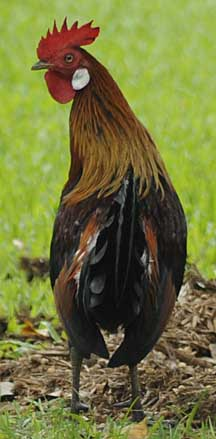
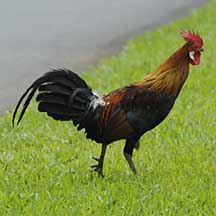

|
|
| vertebrates text index | photo index |
| Phylum Chordata > Subphylum Vertebrata > Class Aves |
| Red
junglefowl Gallus gallus Family Phasianidae updated Oct 2016 Where seen? These wild 'chickens' are commonly encountered on Pulau Ubin. They are now also seen in some of our coastal parks such as Sungei Buloh Wetland Reserve and Pasir Ris Park. The Red junglefowl is the wild ancestor of domesticated chickens. Features: The colourful male (about 80cm) has white ear patches and a white puff at the base of his tail. The drab female (about 40cm) has dull brown streaky plumage. She also has white ear patches and lacks a comb or wattles on her head. Their feet are lead-grey. The Red junglefowl cockerel's call sounds just like his domesticated cousin but his crowing is said to be more high-pitched and ends more abruptly. If alarmed, these shy birds can fly quite a distance, for example to cross rivers, and quite high, spiralling upwards to the tree tops. In fact, they roost in trees. They prefer forest edges, but elsewhere, they are found in habitats ranging from mangroves to high mountain passes. Junglefowl food: Like their cousins the domesticated chickens, Red jungelfowl forage on the ground for seeds, fruits and insects. They use their feet to scratch away leaf litter and peck at tit bits hidden underneath. To thrive, these birds need good ground-level cover to hide and feed in. Some have been observed feeding on insects flushed out by the movements of larger animals. At Chek Jawa, large groups of 20 or more have been seen emerging from the coastal forest to forage on the beach with the outgoing tide. However, they are extremely shy and will flee into the forest at the slightest sign of danger. Jungelfowl chicks: Red junglefowl cockerels are territorial and maintain a harem of 3-5 females. Including juveniles, the group can be as many as 20. The male performs courtship rituals to attract a female. She builds a nest by scraping out a hollow on the ground in a dense thicket of vegetation and lays 5-6 beige to pale reddish brown eggs. She incubates the eggs alone. These hatch in about three weeks. The downy buff-coloured chicks can run around and follow their mother in a few hours. She keeps them close to cover until they are well grown. They fledge in about 12 days. |
 Pasir Ris Park, Sep 09  Pasir Ris Park, Sep 09 |
| Human
uses: Red junglefowl are believed to have been domesticated
thousands of years ago. It is said that they were first domesticated
for cockfighting, later for religious ceremonies and only much later
as food. Some chickens were bred for their feathers, which were used
in ceremonial costumes. Like other domesticated animals, there are
now many different breeds of chickens for various purposes from laying
eggs, providing meat or just for their sheer beauty. Status and threats: The Red junglefowl is listed as 'Endangered' in the Red List of threatened animals of Singapore. They are not only affected by habitat loss but also by poaching and interbreeding with domesticated chickens. They are found from India to Southern China, throughout Southeast Asia to the Philippines and Bali. |
| Red junglefowl on Singapore shores |
| Photos of Red junglefowl or free download from wildsingapore flickr |
| Distribution in Singapore on this wildsingapore flickr map |
|
Links
References
|